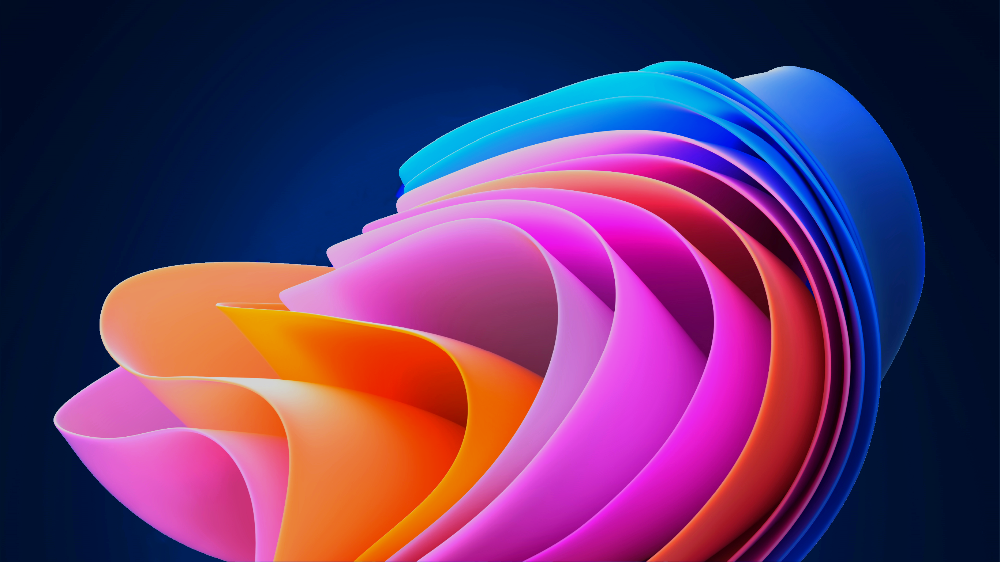
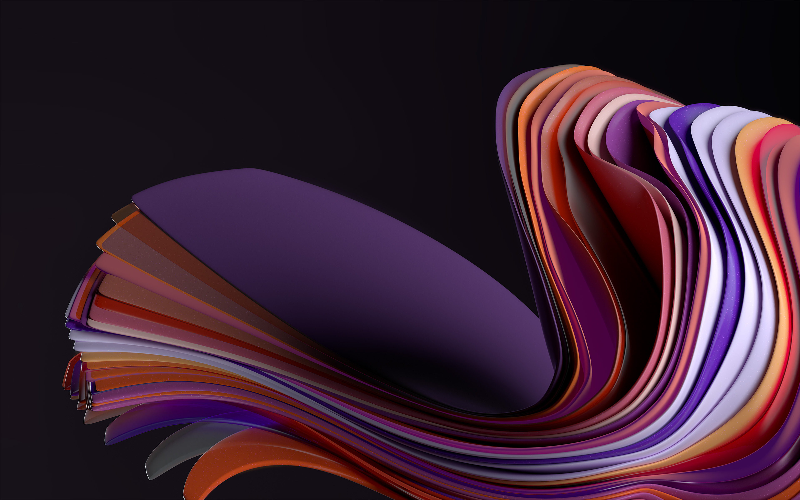
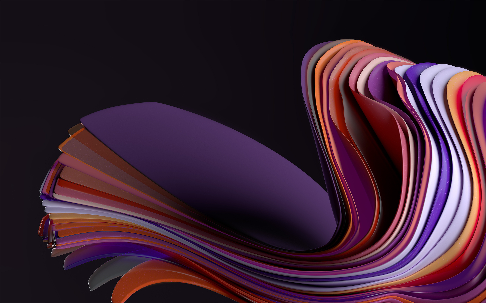
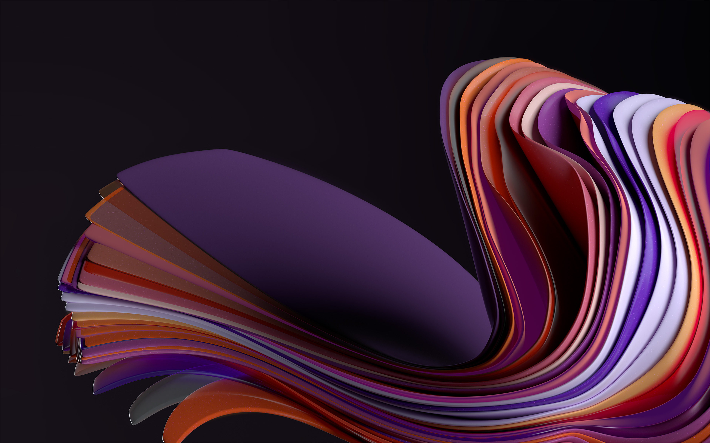

09:24
Lundi 1 Janvier
Ce système est géré par ModuloDeveloppementInstance.
Certaines fonctionnalitées ne fonctionneront pas correctement.
Certaines fonctionnalitées ne fonctionneront pas correctement.


changer le fond écran
Aucune Notification pour le momment
Changer le fond écran



 




09:24
Lundi 1 Janvier

Utilisateur